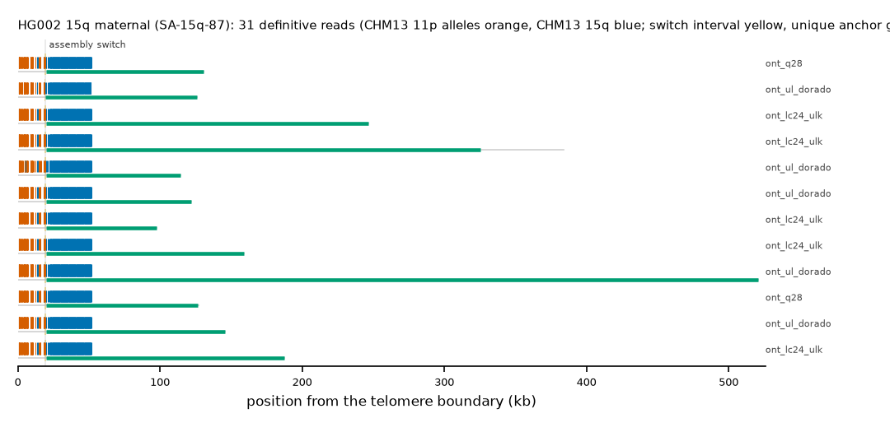

HG002 15q maternal: SA-15q-87
Claim HG002#2#chr15_MATERNAL#R. All claims
- cohort
- HG002 Q100
- individual
- HG002
- haplotype
- maternal
- arm
- 15q
- allele
- SA-15q-87 (within family)
- model
- donor CHM13 11p, proximal CHM13 15q, recipient CHM13 15q, pattern DP
- claimed end(s)
HG002#2#chr15_MATERNAL#R- assembly switch
- 17,564 bp from the telomere boundary; on CHM13 chr15:99728050; own-window projection 18595-19711 bp
- v1 verdict
- confirmed (confirmed)
- definitive tier
- definitive (>= 2 datasets)
- reads
- 31 conclusive switch-concordant, 0 discordant, 0 contradicting, 108 consistent; 31 definitive (ont_lc24_ulk,ont_q28,ont_r941_recall,ont_ul_dorado)
- by tier
- definitive:31;consistent:108
- source
- HG002 Q100 v1.1 public read alignments (16 files; 12 independent datasets after molecule de-duplication)

Conclusive and contradicting reads (43)
153 further reads are consistent (switch test passed, but no terminal telomere, anchor or integrity); they are
listed in reads.tsv.gz. Switch: 95% interval in subtelomere coordinates (kb from the
telomere boundary) and projected on CHM13 15q. Each samtools command prints the read's record
from its public file (CRAM: add the CHM13 v2.0 FASTA as -T).
| read | dataset | tier | length | switch (subtelomere, kb) | switch on CHM13 | donor units / purity | proximal units / purity | anchor (CHM13, MAPQ, unique) | own-assembly best end | fetch |
|---|---|---|---|---|---|---|---|---|---|---|
f5cb1499-4a22-42d3-8183-55be8bd67f9f | ont_lc24_ulk | definitive | 387,211 | 18.6-19.7 | chr15:99730153-99731269 | 57 / 0.93 | 153 / 0.99 | chr15:99431400-99730153, 60, 287.1 kb | HG002#2#chr15_MATERNAL#R (99.7%) ✓ | samtoolssamtools view -F 0x900 -X 'https://human-pangenomics.s3.amazonaws.com/T2T/HG002/assemblies/polishing/HG002/v1.1/mapping/ont_lc24_ulk/hg002v1.1_ont_lc24_ulk.pri.bam' 'https://human-pangenomics.s3.amazonaws.com/T2T/HG002/assemblies/polishing/HG002/v1.1/mapping/ont_lc24_ulk/hg002v1.1_ont_lc24_ulk.pri.bam.bai' 'chr15_MATERNAL:100824287-100881320' | awk -v r='f5cb1499-4a22-42d3-8183-55be8bd67f9f' '$1==r' |
08873cc8-037b-48d9-9089-f025895e58a6 | ont_lc24_ulk | definitive | 250,119 | 18.6-19.7 | chr15:99730153-99731271 | 57 / 0.93 | 153 / 0.99 | chr15:99510308-99730153, 60, 208.2 kb | HG002#2#chr15_MATERNAL#R (99.6%) ✓ | samtoolssamtools view -F 0x900 -X 'https://human-pangenomics.s3.amazonaws.com/T2T/HG002/assemblies/polishing/HG002/v1.1/mapping/ont_lc24_ulk/hg002v1.1_ont_lc24_ulk.pri.bam' 'https://human-pangenomics.s3.amazonaws.com/T2T/HG002/assemblies/polishing/HG002/v1.1/mapping/ont_lc24_ulk/hg002v1.1_ont_lc24_ulk.pri.bam.bai' 'chr15_MATERNAL:100824287-100881320' | awk -v r='08873cc8-037b-48d9-9089-f025895e58a6' '$1==r' |
f13127c6-9d6b-489c-92af-0a869ded5f85 | ont_lc24_ulk | definitive | 191,704 | 18.6-19.7 | chr15:99730153-99731266 | 58 / 0.91 | 151 / 1.00 | chr15:99562948-99730153, 60, 155.5 kb | HG002#2#chr15_MATERNAL#R (99.8%) ✓ | samtoolssamtools view -F 0x900 -X 'https://human-pangenomics.s3.amazonaws.com/T2T/HG002/assemblies/polishing/HG002/v1.1/mapping/ont_lc24_ulk/hg002v1.1_ont_lc24_ulk.pri.bam' 'https://human-pangenomics.s3.amazonaws.com/T2T/HG002/assemblies/polishing/HG002/v1.1/mapping/ont_lc24_ulk/hg002v1.1_ont_lc24_ulk.pri.bam.bai' 'chr15_MATERNAL:100824287-100881320' | awk -v r='f13127c6-9d6b-489c-92af-0a869ded5f85' '$1==r' |
3124065d-b396-4b92-8851-6a669a440424 | ont_lc24_ulk | definitive | 162,784 | 18.6-19.7 | chr15:99730153-99731268 | 57 / 0.93 | 153 / 0.99 | chr15:99591634-99730153, 60, 126.8 kb | HG002#2#chr15_MATERNAL#R (99.8%) ✓ | samtoolssamtools view -F 0x900 -X 'https://human-pangenomics.s3.amazonaws.com/T2T/HG002/assemblies/polishing/HG002/v1.1/mapping/ont_lc24_ulk/hg002v1.1_ont_lc24_ulk.pri.bam' 'https://human-pangenomics.s3.amazonaws.com/T2T/HG002/assemblies/polishing/HG002/v1.1/mapping/ont_lc24_ulk/hg002v1.1_ont_lc24_ulk.pri.bam.bai' 'chr15_MATERNAL:100824287-100881320' | awk -v r='3124065d-b396-4b92-8851-6a669a440424' '$1==r' |
c26cf3a2-8aa5-40b3-ac1c-e0e11f59ff19 | ont_lc24_ulk | definitive | 102,931 | 18.6-19.7 | chr15:99730153-99731269 | 58 / 0.91 | 150 / 1.00 | chr15:99650771-99730153, 60, 67.7 kb | HG002#2#chr15_MATERNAL#R (99.1%) ✓ | samtoolssamtools view -F 0x900 -X 'https://human-pangenomics.s3.amazonaws.com/T2T/HG002/assemblies/polishing/HG002/v1.1/mapping/ont_lc24_ulk/hg002v1.1_ont_lc24_ulk.pri.bam' 'https://human-pangenomics.s3.amazonaws.com/T2T/HG002/assemblies/polishing/HG002/v1.1/mapping/ont_lc24_ulk/hg002v1.1_ont_lc24_ulk.pri.bam.bai' 'chr15_MATERNAL:100824287-100881320' | awk -v r='c26cf3a2-8aa5-40b3-ac1c-e0e11f59ff19' '$1==r' |
3d819a46-2e36-419e-890a-bfdbfbde8392 | ont_lc24_ulk | definitive | 101,690 | 18.6-19.7 | chr15:99730153-99731269 | 57 / 0.93 | 153 / 0.99 | chr15:99653095-99730153, 60, 65.4 kb | HG002#2#chr15_MATERNAL#R (99.8%) ✓ | samtoolssamtools view -F 0x900 -X 'https://human-pangenomics.s3.amazonaws.com/T2T/HG002/assemblies/polishing/HG002/v1.1/mapping/ont_lc24_ulk/hg002v1.1_ont_lc24_ulk.pri.bam' 'https://human-pangenomics.s3.amazonaws.com/T2T/HG002/assemblies/polishing/HG002/v1.1/mapping/ont_lc24_ulk/hg002v1.1_ont_lc24_ulk.pri.bam.bai' 'chr15_MATERNAL:100824287-100881320' | awk -v r='3d819a46-2e36-419e-890a-bfdbfbde8392' '$1==r' |
93a566c1-a0c1-4e1d-ac0c-2dfeb2cdee6d | ont_q28 | definitive | 132,463 | 18.6-19.7 | chr15:99730153-99731270 | 57 / 0.93 | 153 / 0.99 | chr15:99619865-99730153, 60, 98.6 kb | HG002#2#chr15_MATERNAL#R (99.9%) ✓ | samtoolssamtools view -F 0x900 -X 'https://human-pangenomics.s3.amazonaws.com/T2T/HG002/assemblies/polishing/HG002/v1.1/mapping/ont_epi2me_q28/hg002v1.1_ont_epi2me_q28.pri.bam' 'https://human-pangenomics.s3.amazonaws.com/T2T/HG002/assemblies/polishing/HG002/v1.1/mapping/ont_epi2me_q28/hg002v1.1_ont_epi2me_q28.pri.bam.bai' 'chr15_MATERNAL:100824287-100881320' | awk -v r='93a566c1-a0c1-4e1d-ac0c-2dfeb2cdee6d' '$1==r' |
459c5296-7f8d-4090-b49f-41eeafa5db24 | ont_q28 | definitive | 128,215 | 18.6-19.7 | chr15:99730153-99731270 | 57 / 0.93 | 153 / 0.99 | chr15:99623615-99730153, 60, 94.9 kb | HG002#2#chr15_MATERNAL#R (99.8%) ✓ | samtoolssamtools view -F 0x900 -X 'https://human-pangenomics.s3.amazonaws.com/T2T/HG002/assemblies/polishing/HG002/v1.1/mapping/ont_epi2me_q28/hg002v1.1_ont_epi2me_q28.pri.bam' 'https://human-pangenomics.s3.amazonaws.com/T2T/HG002/assemblies/polishing/HG002/v1.1/mapping/ont_epi2me_q28/hg002v1.1_ont_epi2me_q28.pri.bam.bai' 'chr15_MATERNAL:100824287-100881320' | awk -v r='459c5296-7f8d-4090-b49f-41eeafa5db24' '$1==r' |
b257a1be-f5ad-475c-bbe8-917e9277fa3d | ont_q28 | definitive | 114,814 | 18.6-19.7 | chr15:99730153-99731271 | 59 / 0.92 | 150 / 1.00 | chr15:99636856-99730153, 60, 81.6 kb | HG002#2#chr15_MATERNAL#R (99.7%) ✓ | samtoolssamtools view -F 0x900 -X 'https://human-pangenomics.s3.amazonaws.com/T2T/HG002/assemblies/polishing/HG002/v1.1/mapping/ont_epi2me_q28/hg002v1.1_ont_epi2me_q28.pri.bam' 'https://human-pangenomics.s3.amazonaws.com/T2T/HG002/assemblies/polishing/HG002/v1.1/mapping/ont_epi2me_q28/hg002v1.1_ont_epi2me_q28.pri.bam.bai' 'chr15_MATERNAL:100824287-100881320' | awk -v r='b257a1be-f5ad-475c-bbe8-917e9277fa3d' '$1==r' |
5d030d09-f37e-4fa1-b77a-48746424ae92 | ont_r941_recall | definitive | 437,087 | 18.7-19.0 | chr15:99730889-99731264 | 52 / 0.87 | 151 / 1.00 | chr15:99320295-99730889, 60, 392.2 kb | HG002#2#chr15_MATERNAL#R (96.4%) ✓ | samtoolssamtools view -F 0x900 -X 'https://human-pangenomics.s3.amazonaws.com/T2T/HG002/assemblies/polishing/HG002/v1.1/mapping/ont_methylation_recall_oct2024/03_08_22_R941_HG002.pri.bam' 'https://human-pangenomics.s3.amazonaws.com/T2T/HG002/assemblies/polishing/HG002/v1.1/mapping/ont_methylation_recall_oct2024/03_08_22_R941_HG002.pri.bam.bai' 'chr15_MATERNAL:100824287-100881320' | awk -v r='5d030d09-f37e-4fa1-b77a-48746424ae92' '$1==r' |
1c559d8a-0aba-4269-85b1-d446c9c5d89b | ont_r941_recall | definitive | 138,464 | 15.6-19.6 | chr15:99730153-99734169 | 48 / 0.94 | 156 / 0.98 | chr15:99613599-99730153, 60, 104.9 kb | HG002#2#chr15_MATERNAL#R (97.1%) ✓ | samtoolssamtools view -F 0x900 -X 'https://human-pangenomics.s3.amazonaws.com/T2T/HG002/assemblies/polishing/HG002/v1.1/mapping/ont_methylation_recall_oct2024/03_08_22_R941_HG002.pri.bam' 'https://human-pangenomics.s3.amazonaws.com/T2T/HG002/assemblies/polishing/HG002/v1.1/mapping/ont_methylation_recall_oct2024/03_08_22_R941_HG002.pri.bam.bai' 'chr15_MATERNAL:100824287-100881320' | awk -v r='1c559d8a-0aba-4269-85b1-d446c9c5d89b' '$1==r' |
db649a07-5ba9-4e85-a9bc-836bcb0ab6ab | ont_r941_recall | definitive | 133,921 | 18.8-19.2 | chr15:99730889-99731265 | 52 / 0.90 | 151 / 1.00 | chr15:99621144-99730889, 60, 97.3 kb | HG002#2#chr15_MATERNAL#R (96.1%) ✓ | samtoolssamtools view -F 0x900 -X 'https://human-pangenomics.s3.amazonaws.com/T2T/HG002/assemblies/polishing/HG002/v1.1/mapping/ont_methylation_recall_oct2024/03_08_22_R941_HG002.pri.bam' 'https://human-pangenomics.s3.amazonaws.com/T2T/HG002/assemblies/polishing/HG002/v1.1/mapping/ont_methylation_recall_oct2024/03_08_22_R941_HG002.pri.bam.bai' 'chr15_MATERNAL:100824287-100881320' | awk -v r='db649a07-5ba9-4e85-a9bc-836bcb0ab6ab' '$1==r' |
72584654-1ddb-403b-b2a9-e9bf71b96a9a | ont_r941_recall | definitive | 125,082 | 23.2-23.6 | chr15:99730889-99731260 | 55 / 0.93 | 152 / 1.00 | chr15:99630419-99730889, 60, 88.1 kb | HG002#2#chr15_MATERNAL#R (96.9%) ✓ | samtoolssamtools view -F 0x900 -X 'https://human-pangenomics.s3.amazonaws.com/T2T/HG002/assemblies/polishing/HG002/v1.1/mapping/ont_methylation_recall_oct2024/03_08_22_R941_HG002.pri.bam' 'https://human-pangenomics.s3.amazonaws.com/T2T/HG002/assemblies/polishing/HG002/v1.1/mapping/ont_methylation_recall_oct2024/03_08_22_R941_HG002.pri.bam.bai' 'chr15_MATERNAL:100824287-100881320' | awk -v r='72584654-1ddb-403b-b2a9-e9bf71b96a9a' '$1==r' |
c22b06ad-869d-4deb-917a-29615f55aaae | ont_r941_recall | definitive | 122,156 | 18.7-19.1 | chr15:99730889-99731269 | 56 / 0.93 | 151 / 1.00 | chr15:99632434-99730889, 60, 86.0 kb | HG002#2#chr15_MATERNAL#R (97.3%) ✓ | samtoolssamtools view -F 0x900 -X 'https://human-pangenomics.s3.amazonaws.com/T2T/HG002/assemblies/polishing/HG002/v1.1/mapping/ont_methylation_recall_oct2024/03_08_22_R941_HG002.pri.bam' 'https://human-pangenomics.s3.amazonaws.com/T2T/HG002/assemblies/polishing/HG002/v1.1/mapping/ont_methylation_recall_oct2024/03_08_22_R941_HG002.pri.bam.bai' 'chr15_MATERNAL:100824287-100881320' | awk -v r='c22b06ad-869d-4deb-917a-29615f55aaae' '$1==r' |
e11147f5-096c-4a47-b259-fc9bb6873371 | ont_r941_recall | definitive | 100,451 | 18.5-19.6 | chr15:99730153-99731270 | 55 / 0.93 | 153 / 0.99 | chr15:99652330-99730153, 60, 66.1 kb | HG002#2#chr15_MATERNAL#R (95.6%) ✓ | samtoolssamtools view -F 0x900 -X 'https://human-pangenomics.s3.amazonaws.com/T2T/HG002/assemblies/polishing/HG002/v1.1/mapping/ont_methylation_recall_oct2024/03_08_22_R941_HG002.pri.bam' 'https://human-pangenomics.s3.amazonaws.com/T2T/HG002/assemblies/polishing/HG002/v1.1/mapping/ont_methylation_recall_oct2024/03_08_22_R941_HG002.pri.bam.bai' 'chr15_MATERNAL:100824287-100881320' | awk -v r='e11147f5-096c-4a47-b259-fc9bb6873371' '$1==r' |
1f2a9c0a-9589-4cba-818f-831cd9214752 | ont_ul_dorado | definitive | 521,578 | 18.6-19.7 | chr15:99730153-99731270 | 57 / 0.93 | 153 / 0.99 | chr15:99236161-99730153, 60, 476.3 kb | HG002#2#chr15_MATERNAL#R (99.3%) ✓ | samtoolssamtools view -F 0x900 -X 'https://human-pangenomics.s3.amazonaws.com/T2T/HG002/assemblies/polishing/HG002/v1.1/mapping/ont_r10_ul_dorado/hg002v1.1_ont_r10_ul_dorado.pri.bam' 'https://human-pangenomics.s3.amazonaws.com/T2T/HG002/assemblies/polishing/HG002/v1.1/mapping/ont_r10_ul_dorado/hg002v1.1_ont_r10_ul_dorado.pri.bam.bai' 'chr15_MATERNAL:100824287-100881320' | awk -v r='1f2a9c0a-9589-4cba-818f-831cd9214752' '$1==r' |
93deb9fc-0c5f-417a-b593-126719ce9fea | ont_ul_dorado | definitive | 384,532 | 18.6-19.7 | chr15:99730153-99731274 | 56 / 0.91 | 149 / 1.00 | chr15:99373492-99730153, 60, 339.0 kb | HG002#2#chr15_MATERNAL#R (98.7%) ✓ | samtoolssamtools view -F 0x900 -X 'https://human-pangenomics.s3.amazonaws.com/T2T/HG002/assemblies/polishing/HG002/v1.1/mapping/ont_r10_ul_dorado/hg002v1.1_ont_r10_ul_dorado.pri.bam' 'https://human-pangenomics.s3.amazonaws.com/T2T/HG002/assemblies/polishing/HG002/v1.1/mapping/ont_r10_ul_dorado/hg002v1.1_ont_r10_ul_dorado.pri.bam.bai' 'chr15_MATERNAL:100824287-100881320' | awk -v r='93deb9fc-0c5f-417a-b593-126719ce9fea' '$1==r' |
e95d7e35-ddfb-4432-bdf5-e6fee62a1e3e | ont_ul_dorado | definitive | 270,712 | 19.0-20.1 | chr15:99730153-99731270 | 59 / 0.92 | 149 / 1.00 | chr15:99486819-99730153, 60, 231.7 kb | HG002#2#chr15_MATERNAL#R (98.7%) ✓ | samtoolssamtools view -F 0x900 -X 'https://human-pangenomics.s3.amazonaws.com/T2T/HG002/assemblies/polishing/HG002/v1.1/mapping/ont_r10_ul_dorado/hg002v1.1_ont_r10_ul_dorado.pri.bam' 'https://human-pangenomics.s3.amazonaws.com/T2T/HG002/assemblies/polishing/HG002/v1.1/mapping/ont_r10_ul_dorado/hg002v1.1_ont_r10_ul_dorado.pri.bam.bai' 'chr15_MATERNAL:100824287-100881320' | awk -v r='e95d7e35-ddfb-4432-bdf5-e6fee62a1e3e' '$1==r' |
724a0c2c-a854-40b0-b613-8c37e9ed8551 | ont_ul_dorado | definitive | 213,829 | 18.6-21.0 | chr15:99728867-99731257 | 59 / 0.92 | 150 / 0.99 | chr15:99537046-99728867, 60, 181.4 kb | HG002#2#chr15_MATERNAL#R (99.0%) ✓ | samtoolssamtools view -F 0x900 -X 'https://human-pangenomics.s3.amazonaws.com/T2T/HG002/assemblies/polishing/HG002/v1.1/mapping/ont_r10_ul_dorado/hg002v1.1_ont_r10_ul_dorado.pri.bam' 'https://human-pangenomics.s3.amazonaws.com/T2T/HG002/assemblies/polishing/HG002/v1.1/mapping/ont_r10_ul_dorado/hg002v1.1_ont_r10_ul_dorado.pri.bam.bai' 'chr15_MATERNAL:100824287-100881320' | awk -v r='724a0c2c-a854-40b0-b613-8c37e9ed8551' '$1==r' |
bf2106e4-f298-4394-a8ee-8e2907f595f0 | ont_ul_dorado | definitive | 187,398 | 18.6-19.7 | chr15:99730153-99731266 | 59 / 0.92 | 150 / 1.00 | chr15:99563643-99730153, 60, 154.8 kb | HG002#2#chr15_MATERNAL#R (99.4%) ✓ | samtoolssamtools view -F 0x900 -X 'https://human-pangenomics.s3.amazonaws.com/T2T/HG002/assemblies/polishing/HG002/v1.1/mapping/ont_r10_ul_dorado/hg002v1.1_ont_r10_ul_dorado.pri.bam' 'https://human-pangenomics.s3.amazonaws.com/T2T/HG002/assemblies/polishing/HG002/v1.1/mapping/ont_r10_ul_dorado/hg002v1.1_ont_r10_ul_dorado.pri.bam.bai' 'chr15_MATERNAL:100824287-100881320' | awk -v r='bf2106e4-f298-4394-a8ee-8e2907f595f0' '$1==r' |
84dc1a06-0d87-4985-87e0-c5e914c5f2a2 | ont_ul_dorado | definitive | 169,281 | 19.4-20.5 | chr15:99730153-99731267 | 59 / 0.92 | 150 / 1.00 | chr15:99583217-99730153, 60, 135.3 kb | HG002#2#chr15_MATERNAL#R (98.5%) ✓ | samtoolssamtools view -F 0x900 -X 'https://human-pangenomics.s3.amazonaws.com/T2T/HG002/assemblies/polishing/HG002/v1.1/mapping/ont_r10_ul_dorado/hg002v1.1_ont_r10_ul_dorado.pri.bam' 'https://human-pangenomics.s3.amazonaws.com/T2T/HG002/assemblies/polishing/HG002/v1.1/mapping/ont_r10_ul_dorado/hg002v1.1_ont_r10_ul_dorado.pri.bam.bai' 'chr15_MATERNAL:100824287-100881320' | awk -v r='84dc1a06-0d87-4985-87e0-c5e914c5f2a2' '$1==r' |
93274ac6-8033-4362-b8a0-25cf4d27cc17 | ont_ul_dorado | definitive | 161,866 | 18.6-19.7 | chr15:99730153-99731266 | 59 / 0.92 | 150 / 1.00 | chr15:99589708-99730153, 60, 128.8 kb | HG002#2#chr15_MATERNAL#R (99.3%) ✓ | samtoolssamtools view -F 0x900 -X 'https://human-pangenomics.s3.amazonaws.com/T2T/HG002/assemblies/polishing/HG002/v1.1/mapping/ont_r10_ul_dorado/hg002v1.1_ont_r10_ul_dorado.pri.bam' 'https://human-pangenomics.s3.amazonaws.com/T2T/HG002/assemblies/polishing/HG002/v1.1/mapping/ont_r10_ul_dorado/hg002v1.1_ont_r10_ul_dorado.pri.bam.bai' 'chr15_MATERNAL:100824287-100881320' | awk -v r='93274ac6-8033-4362-b8a0-25cf4d27cc17' '$1==r' |
a6759dfb-c60e-4ac2-be73-7608583d99a7 | ont_ul_dorado | definitive | 158,770 | 18.3-19.4 | chr15:99730153-99731272 | 48 / 0.85 | 147 / 1.00 | chr15:99590050-99730153, 60, 128.4 kb | HG002#2#chr15_MATERNAL#R (88.7%) ✓ | samtoolssamtools view -F 0x900 -X 'https://human-pangenomics.s3.amazonaws.com/T2T/HG002/assemblies/polishing/HG002/v1.1/mapping/ont_r10_ul_dorado/hg002v1.1_ont_r10_ul_dorado.pri.bam' 'https://human-pangenomics.s3.amazonaws.com/T2T/HG002/assemblies/polishing/HG002/v1.1/mapping/ont_r10_ul_dorado/hg002v1.1_ont_r10_ul_dorado.pri.bam.bai' 'chr15_MATERNAL:100824287-100881320' | awk -v r='a6759dfb-c60e-4ac2-be73-7608583d99a7' '$1==r' |
b8c544bf-bf7a-45e3-a67f-e01b88695964 | ont_ul_dorado | definitive | 146,965 | 18.6-19.7 | chr15:99730153-99731268 | 59 / 0.92 | 150 / 1.00 | chr15:99604630-99730153, 60, 113.8 kb | HG002#2#chr15_MATERNAL#R (99.5%) ✓ | samtoolssamtools view -F 0x900 -X 'https://human-pangenomics.s3.amazonaws.com/T2T/HG002/assemblies/polishing/HG002/v1.1/mapping/ont_r10_ul_dorado/hg002v1.1_ont_r10_ul_dorado.pri.bam' 'https://human-pangenomics.s3.amazonaws.com/T2T/HG002/assemblies/polishing/HG002/v1.1/mapping/ont_r10_ul_dorado/hg002v1.1_ont_r10_ul_dorado.pri.bam.bai' 'chr15_MATERNAL:100824287-100881320' | awk -v r='b8c544bf-bf7a-45e3-a67f-e01b88695964' '$1==r' |
4628ea93-fa3a-4ee6-814b-5b60e63e6562 | ont_ul_dorado | definitive | 130,939 | 18.6-19.0 | chr15:99730889-99731269 | 51 / 0.92 | 148 / 1.00 | chr15:99619554-99730889, 60, 98.9 kb | HG002#2#chr15_MATERNAL#R (95.9%) ✓ | samtoolssamtools view -F 0x900 -X 'https://human-pangenomics.s3.amazonaws.com/T2T/HG002/assemblies/polishing/HG002/v1.1/mapping/ont_r10_ul_dorado/hg002v1.1_ont_r10_ul_dorado.pri.bam' 'https://human-pangenomics.s3.amazonaws.com/T2T/HG002/assemblies/polishing/HG002/v1.1/mapping/ont_r10_ul_dorado/hg002v1.1_ont_r10_ul_dorado.pri.bam.bai' 'chr15_MATERNAL:100824287-100881320' | awk -v r='4628ea93-fa3a-4ee6-814b-5b60e63e6562' '$1==r' |
befeb185-eb07-44d2-a930-8dbc14570118 | ont_ul_dorado | definitive | 127,844 | 18.5-19.6 | chr15:99730153-99731266 | 57 / 0.93 | 153 / 0.99 | chr15:99624056-99730153, 60, 94.4 kb | HG002#2#chr15_MATERNAL#R (99.2%) ✓ | samtoolssamtools view -F 0x900 -X 'https://human-pangenomics.s3.amazonaws.com/T2T/HG002/assemblies/polishing/HG002/v1.1/mapping/ont_r10_ul_dorado/hg002v1.1_ont_r10_ul_dorado.pri.bam' 'https://human-pangenomics.s3.amazonaws.com/T2T/HG002/assemblies/polishing/HG002/v1.1/mapping/ont_r10_ul_dorado/hg002v1.1_ont_r10_ul_dorado.pri.bam.bai' 'chr15_MATERNAL:100824287-100881320' | awk -v r='befeb185-eb07-44d2-a930-8dbc14570118' '$1==r' |
80375c93-eb6b-4b5c-9382-7cc8a1cc219d | ont_ul_dorado | definitive | 118,411 | 18.2-19.5 | chr15:99730153-99731508 | 42 / 0.86 | 109 / 0.99 | chr15:99627624-99730153, 60, 90.8 kb | HG002#2#chr15_MATERNAL#R (83.8%) ✓ | samtoolssamtools view -F 0x900 -X 'https://human-pangenomics.s3.amazonaws.com/T2T/HG002/assemblies/polishing/HG002/v1.1/mapping/ont_r10_ul_dorado/hg002v1.1_ont_r10_ul_dorado.pri.bam' 'https://human-pangenomics.s3.amazonaws.com/T2T/HG002/assemblies/polishing/HG002/v1.1/mapping/ont_r10_ul_dorado/hg002v1.1_ont_r10_ul_dorado.pri.bam.bai' 'chr15_MATERNAL:100824287-100881320' | awk -v r='80375c93-eb6b-4b5c-9382-7cc8a1cc219d' '$1==r' |
6f76e298-1883-41f8-9104-549ee51cca72 | ont_ul_dorado | definitive | 122,681 | 18.6-19.7 | chr15:99730153-99731268 | 57 / 0.93 | 153 / 0.99 | chr15:99628686-99730153, 60, 89.8 kb | HG002#2#chr15_MATERNAL#R (99.7%) ✓ | samtoolssamtools view -F 0x900 -X 'https://human-pangenomics.s3.amazonaws.com/T2T/HG002/assemblies/polishing/HG002/v1.1/mapping/ont_r10_ul_dorado/hg002v1.1_ont_r10_ul_dorado.pri.bam' 'https://human-pangenomics.s3.amazonaws.com/T2T/HG002/assemblies/polishing/HG002/v1.1/mapping/ont_r10_ul_dorado/hg002v1.1_ont_r10_ul_dorado.pri.bam.bai' 'chr15_MATERNAL:100824287-100881320' | awk -v r='6f76e298-1883-41f8-9104-549ee51cca72' '$1==r' |
f57b338b-d6f7-4441-a687-4552b1e67ea8 | ont_ul_dorado | definitive | 117,852 | 18.6-19.7 | chr15:99730153-99731267 | 57 / 0.91 | 152 / 0.99 | chr15:99634276-99730153, 60, 84.2 kb | HG002#2#chr15_MATERNAL#R (98.7%) ✓ | samtoolssamtools view -F 0x900 -X 'https://human-pangenomics.s3.amazonaws.com/T2T/HG002/assemblies/polishing/HG002/v1.1/mapping/ont_r10_ul_dorado/hg002v1.1_ont_r10_ul_dorado.pri.bam' 'https://human-pangenomics.s3.amazonaws.com/T2T/HG002/assemblies/polishing/HG002/v1.1/mapping/ont_r10_ul_dorado/hg002v1.1_ont_r10_ul_dorado.pri.bam.bai' 'chr15_MATERNAL:100824287-100881320' | awk -v r='f57b338b-d6f7-4441-a687-4552b1e67ea8' '$1==r' |
7399934d-8664-4b42-930d-825e2e9fd8bf | ont_ul_dorado | definitive | 115,809 | 18.7-19.8 | chr15:99730153-99731270 | 57 / 0.91 | 153 / 0.99 | chr15:99635928-99730153, 60, 82.5 kb | HG002#2#chr15_MATERNAL#R (99.0%) ✓ | samtoolssamtools view -F 0x900 -X 'https://human-pangenomics.s3.amazonaws.com/T2T/HG002/assemblies/polishing/HG002/v1.1/mapping/ont_r10_ul_dorado/hg002v1.1_ont_r10_ul_dorado.pri.bam' 'https://human-pangenomics.s3.amazonaws.com/T2T/HG002/assemblies/polishing/HG002/v1.1/mapping/ont_r10_ul_dorado/hg002v1.1_ont_r10_ul_dorado.pri.bam.bai' 'chr15_MATERNAL:100824287-100881320' | awk -v r='7399934d-8664-4b42-930d-825e2e9fd8bf' '$1==r' |
cfc62b03-95a0-4461-9184-186c7685ce21 | ont_ul_dorado | definitive | 104,925 | 18.6-19.7 | chr15:99730153-99731269 | 58 / 0.91 | 150 / 1.00 | chr15:99647501-99730153, 60, 71.0 kb | HG002#2#chr15_MATERNAL#R (99.3%) ✓ | samtoolssamtools view -F 0x900 -X 'https://human-pangenomics.s3.amazonaws.com/T2T/HG002/assemblies/polishing/HG002/v1.1/mapping/ont_r10_ul_dorado/hg002v1.1_ont_r10_ul_dorado.pri.bam' 'https://human-pangenomics.s3.amazonaws.com/T2T/HG002/assemblies/polishing/HG002/v1.1/mapping/ont_r10_ul_dorado/hg002v1.1_ont_r10_ul_dorado.pri.bam.bai' 'chr15_MATERNAL:100824287-100881320' | awk -v r='cfc62b03-95a0-4461-9184-186c7685ce21' '$1==r' |
93a566c1-a0c1-4e1d-ac0c-2dfeb2cdee6d | ont_herro | definitive (not counted: derived) | 132,389 | 18.6-19.7 | chr15:99730153-99731269 | 57 / 0.93 | 153 / 0.99 | chr15:99619867-99730153, 60, 98.6 kb | HG002#2#chr15_MATERNAL#R (99.9%) ✓ | samtoolssamtools view -F 0x900 -X 'https://human-pangenomics.s3.amazonaws.com/T2T/HG002/assemblies/polishing/HG002/v1.1/mapping/ont_HERRO_corrected/hg002v1.1_ont_herro_corrected.pri.bam' 'https://human-pangenomics.s3.amazonaws.com/T2T/HG002/assemblies/polishing/HG002/v1.1/mapping/ont_HERRO_corrected/hg002v1.1_ont_herro_corrected.pri.bam.bai' 'chr15_MATERNAL:100824287-100881320' | awk -v r='93a566c1-a0c1-4e1d-ac0c-2dfeb2cdee6d' '$1==r' |
459c5296-7f8d-4090-b49f-41eeafa5db24 | ont_herro | definitive (not counted: derived) | 128,173 | 18.6-19.7 | chr15:99730153-99731269 | 57 / 0.93 | 153 / 0.99 | chr15:99623617-99730153, 60, 94.9 kb | HG002#2#chr15_MATERNAL#R (99.8%) ✓ | samtoolssamtools view -F 0x900 -X 'https://human-pangenomics.s3.amazonaws.com/T2T/HG002/assemblies/polishing/HG002/v1.1/mapping/ont_HERRO_corrected/hg002v1.1_ont_herro_corrected.pri.bam' 'https://human-pangenomics.s3.amazonaws.com/T2T/HG002/assemblies/polishing/HG002/v1.1/mapping/ont_HERRO_corrected/hg002v1.1_ont_herro_corrected.pri.bam.bai' 'chr15_MATERNAL:100824287-100881320' | awk -v r='459c5296-7f8d-4090-b49f-41eeafa5db24' '$1==r' |
b257a1be-f5ad-475c-bbe8-917e9277fa3d | ont_herro | definitive (not counted: derived) | 114,794 | 18.6-19.7 | chr15:99730153-99731269 | 57 / 0.93 | 153 / 0.99 | chr15:99636858-99730153, 60, 81.6 kb | HG002#2#chr15_MATERNAL#R (99.7%) ✓ | samtoolssamtools view -F 0x900 -X 'https://human-pangenomics.s3.amazonaws.com/T2T/HG002/assemblies/polishing/HG002/v1.1/mapping/ont_HERRO_corrected/hg002v1.1_ont_herro_corrected.pri.bam' 'https://human-pangenomics.s3.amazonaws.com/T2T/HG002/assemblies/polishing/HG002/v1.1/mapping/ont_HERRO_corrected/hg002v1.1_ont_herro_corrected.pri.bam.bai' 'chr15_MATERNAL:100824287-100881320' | awk -v r='b257a1be-f5ad-475c-bbe8-917e9277fa3d' '$1==r' |
f5cb1499-4a22-42d3-8183-55be8bd67f9f | ont_q28_lc24 | definitive (not counted: duplicate molecule) | 387,211 | 18.6-19.7 | chr15:99730153-99731269 | 57 / 0.93 | 153 / 0.99 | chr15:99431400-99730153, 60, 287.1 kb | HG002#2#chr15_MATERNAL#R (99.7%) ✓ | samtoolssamtools view -F 0x900 -X 'https://human-pangenomics.s3.amazonaws.com/T2T/HG002/assemblies/polishing/HG002/v1.1/mapping/ont_q28_lc24/hg002v1.1_ont_q28_lc24.bam' 'https://human-pangenomics.s3.amazonaws.com/T2T/HG002/assemblies/polishing/HG002/v1.1/mapping/ont_q28_lc24/hg002v1.1_ont_q28_lc24.bam.bai' 'chr15_MATERNAL:100824287-100881320' | awk -v r='f5cb1499-4a22-42d3-8183-55be8bd67f9f' '$1==r' |
08873cc8-037b-48d9-9089-f025895e58a6 | ont_q28_lc24 | definitive (not counted: duplicate molecule) | 250,119 | 18.6-19.7 | chr15:99730153-99731271 | 57 / 0.93 | 153 / 0.99 | chr15:99510308-99730153, 60, 208.2 kb | HG002#2#chr15_MATERNAL#R (99.6%) ✓ | samtoolssamtools view -F 0x900 -X 'https://human-pangenomics.s3.amazonaws.com/T2T/HG002/assemblies/polishing/HG002/v1.1/mapping/ont_q28_lc24/hg002v1.1_ont_q28_lc24.bam' 'https://human-pangenomics.s3.amazonaws.com/T2T/HG002/assemblies/polishing/HG002/v1.1/mapping/ont_q28_lc24/hg002v1.1_ont_q28_lc24.bam.bai' 'chr15_MATERNAL:100824287-100881320' | awk -v r='08873cc8-037b-48d9-9089-f025895e58a6' '$1==r' |
f13127c6-9d6b-489c-92af-0a869ded5f85 | ont_q28_lc24 | definitive (not counted: duplicate molecule) | 191,704 | 18.6-19.7 | chr15:99730153-99731266 | 58 / 0.91 | 151 / 1.00 | chr15:99562948-99730153, 60, 155.5 kb | HG002#2#chr15_MATERNAL#R (99.8%) ✓ | samtoolssamtools view -F 0x900 -X 'https://human-pangenomics.s3.amazonaws.com/T2T/HG002/assemblies/polishing/HG002/v1.1/mapping/ont_q28_lc24/hg002v1.1_ont_q28_lc24.bam' 'https://human-pangenomics.s3.amazonaws.com/T2T/HG002/assemblies/polishing/HG002/v1.1/mapping/ont_q28_lc24/hg002v1.1_ont_q28_lc24.bam.bai' 'chr15_MATERNAL:100824287-100881320' | awk -v r='f13127c6-9d6b-489c-92af-0a869ded5f85' '$1==r' |
3124065d-b396-4b92-8851-6a669a440424 | ont_q28_lc24 | definitive (not counted: duplicate molecule) | 162,784 | 18.6-19.7 | chr15:99730153-99731268 | 57 / 0.93 | 153 / 0.99 | chr15:99591634-99730153, 60, 126.8 kb | HG002#2#chr15_MATERNAL#R (99.8%) ✓ | samtoolssamtools view -F 0x900 -X 'https://human-pangenomics.s3.amazonaws.com/T2T/HG002/assemblies/polishing/HG002/v1.1/mapping/ont_q28_lc24/hg002v1.1_ont_q28_lc24.bam' 'https://human-pangenomics.s3.amazonaws.com/T2T/HG002/assemblies/polishing/HG002/v1.1/mapping/ont_q28_lc24/hg002v1.1_ont_q28_lc24.bam.bai' 'chr15_MATERNAL:100824287-100881320' | awk -v r='3124065d-b396-4b92-8851-6a669a440424' '$1==r' |
93a566c1-a0c1-4e1d-ac0c-2dfeb2cdee6d | ont_q28_lc24 | definitive (not counted: duplicate molecule) | 132,463 | 18.6-19.7 | chr15:99730153-99731270 | 57 / 0.93 | 153 / 0.99 | chr15:99619865-99730153, 60, 98.6 kb | HG002#2#chr15_MATERNAL#R (99.9%) ✓ | samtoolssamtools view -F 0x900 -X 'https://human-pangenomics.s3.amazonaws.com/T2T/HG002/assemblies/polishing/HG002/v1.1/mapping/ont_q28_lc24/hg002v1.1_ont_q28_lc24.bam' 'https://human-pangenomics.s3.amazonaws.com/T2T/HG002/assemblies/polishing/HG002/v1.1/mapping/ont_q28_lc24/hg002v1.1_ont_q28_lc24.bam.bai' 'chr15_MATERNAL:100824287-100881320' | awk -v r='93a566c1-a0c1-4e1d-ac0c-2dfeb2cdee6d' '$1==r' |
459c5296-7f8d-4090-b49f-41eeafa5db24 | ont_q28_lc24 | definitive (not counted: duplicate molecule) | 128,215 | 18.6-19.7 | chr15:99730153-99731270 | 57 / 0.93 | 153 / 0.99 | chr15:99623615-99730153, 60, 94.9 kb | HG002#2#chr15_MATERNAL#R (99.8%) ✓ | samtoolssamtools view -F 0x900 -X 'https://human-pangenomics.s3.amazonaws.com/T2T/HG002/assemblies/polishing/HG002/v1.1/mapping/ont_q28_lc24/hg002v1.1_ont_q28_lc24.bam' 'https://human-pangenomics.s3.amazonaws.com/T2T/HG002/assemblies/polishing/HG002/v1.1/mapping/ont_q28_lc24/hg002v1.1_ont_q28_lc24.bam.bai' 'chr15_MATERNAL:100824287-100881320' | awk -v r='459c5296-7f8d-4090-b49f-41eeafa5db24' '$1==r' |
b257a1be-f5ad-475c-bbe8-917e9277fa3d | ont_q28_lc24 | definitive (not counted: duplicate molecule) | 114,814 | 18.6-19.7 | chr15:99730153-99731271 | 59 / 0.92 | 150 / 1.00 | chr15:99636856-99730153, 60, 81.6 kb | HG002#2#chr15_MATERNAL#R (99.7%) ✓ | samtoolssamtools view -F 0x900 -X 'https://human-pangenomics.s3.amazonaws.com/T2T/HG002/assemblies/polishing/HG002/v1.1/mapping/ont_q28_lc24/hg002v1.1_ont_q28_lc24.bam' 'https://human-pangenomics.s3.amazonaws.com/T2T/HG002/assemblies/polishing/HG002/v1.1/mapping/ont_q28_lc24/hg002v1.1_ont_q28_lc24.bam.bai' 'chr15_MATERNAL:100824287-100881320' | awk -v r='b257a1be-f5ad-475c-bbe8-917e9277fa3d' '$1==r' |
c26cf3a2-8aa5-40b3-ac1c-e0e11f59ff19 | ont_q28_lc24 | definitive (not counted: duplicate molecule) | 102,931 | 18.6-19.7 | chr15:99730153-99731269 | 58 / 0.91 | 150 / 1.00 | chr15:99650771-99730153, 60, 67.7 kb | HG002#2#chr15_MATERNAL#R (99.1%) ✓ | samtoolssamtools view -F 0x900 -X 'https://human-pangenomics.s3.amazonaws.com/T2T/HG002/assemblies/polishing/HG002/v1.1/mapping/ont_q28_lc24/hg002v1.1_ont_q28_lc24.bam' 'https://human-pangenomics.s3.amazonaws.com/T2T/HG002/assemblies/polishing/HG002/v1.1/mapping/ont_q28_lc24/hg002v1.1_ont_q28_lc24.bam.bai' 'chr15_MATERNAL:100824287-100881320' | awk -v r='c26cf3a2-8aa5-40b3-ac1c-e0e11f59ff19' '$1==r' |
3d819a46-2e36-419e-890a-bfdbfbde8392 | ont_q28_lc24 | definitive (not counted: duplicate molecule) | 101,690 | 18.6-19.7 | chr15:99730153-99731269 | 57 / 0.93 | 153 / 0.99 | chr15:99653095-99730153, 60, 65.4 kb | HG002#2#chr15_MATERNAL#R (99.8%) ✓ | samtoolssamtools view -F 0x900 -X 'https://human-pangenomics.s3.amazonaws.com/T2T/HG002/assemblies/polishing/HG002/v1.1/mapping/ont_q28_lc24/hg002v1.1_ont_q28_lc24.bam' 'https://human-pangenomics.s3.amazonaws.com/T2T/HG002/assemblies/polishing/HG002/v1.1/mapping/ont_q28_lc24/hg002v1.1_ont_q28_lc24.bam.bai' 'chr15_MATERNAL:100824287-100881320' | awk -v r='3d819a46-2e36-419e-890a-bfdbfbde8392' '$1==r' |
Files
CRAM/BAM on CHM13 v2.0, BAM on the person's own assembly windows and the window FASTA: release asset subtel_read_evidence_v1_HG002_Q100.tar.gz, directory read_evidence_v1/HG002_Q100/HG002_2_chr15_MATERNAL_R/ (downloads).
Re-derive this verdict
git clone https://github.com/jlanej/human-subtelomere-atlas && cd human-subtelomere-atlas
evidence/replicate_claim.sh 'HG002#2#chr15_MATERNAL#R'The script fetches the cited reads from the public source by region and read ID, re-runs the frozen criteria and compares every per-read and claim verdict with this page (details).